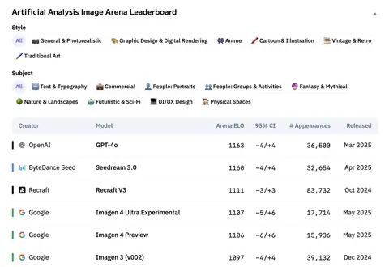

Сегодняшняя статья — описание модели Seedream 3.0, которая генерирует изображения по текстовым запросам. Был момент, когда по замерам Artificial Analysis Arena она обогнала все существующие модели, сейчас — топ-2 модель, уступающая только OpenAI. Правда, с нестатзначимой разницей.
Кажется, что создатели третьей версии Seedream проделали огромную техническую работу и потратили очень много человекочасов, разрабатывая свои модели. Статья вышла всего лишь через месяц после Seedream 2.0, так что её можно воспринимать как набор доработок к прошлой модели, уже неплохо показавшей себя.
Обучая Seedream 3.0, авторы уделили много внимания специфике китайского языка — у многих моделей-конкурентов проблемы с рисованием иероглифов. В частности, обучающие датасеты Seedream обогатили набором объектов китайской культуры. Ещё одна интересная деталь: после первой стадии обучения на изображениях размером 256 пикселей, модель обучается уже на целом диапазоне разрешений — от 512 до 2048 пикселей. А чтобы выкидывать из обучающего датасета меньше картинок с дефектами и вотермарками, авторы просто маскируют в лоссе проблемные области.
В статье упоминается, что авторы обучили собственный VAE, но деталей, к сожалению, нет. Диффузионный трансформер принимает на вход картинку и закодированный текст, но токены для них обрабатываются отдельными MLP. Собственная разработка авторов — расширение 2D RoPE, которое они назвали Scaling RoPE, позволяет генерировать изображения с размером, отличным от того, на чём обучали модель. Стабильность обучения обеспечивает QK-Norm.
Текстовый энкодер дофайнтьюнили из LLM, тренируя её на парах текст-изображение. Так LLM лучше мэтчится с доменом картинок. Закодированные текстовые энкодеры она передаёт в диффузионный трансформер.
Тексты, которые нужно зарендерить на картинке, обрабатывает ByT5 — модель работает на уровне Unicode. Не делит тексты на токены по несколько символов, а кодирует их как последовательность кодов Unicode, чтобы генерировать текст было проще.
Кроме того, в Seedream 3.0 авторы использовали новую парадигму ускорения. Используя разнообразные техники, такие как квантование, консистентное зашумление и семплирование временных шагов с ранжированием по важности, они достигли существенного ускорения при сохранении качества изображения. А встроенный вывод изображений в высоком разрешении (до 2K), делает новую модель ещё более удобной и практичной.
Разбор подготовил
CV Time
